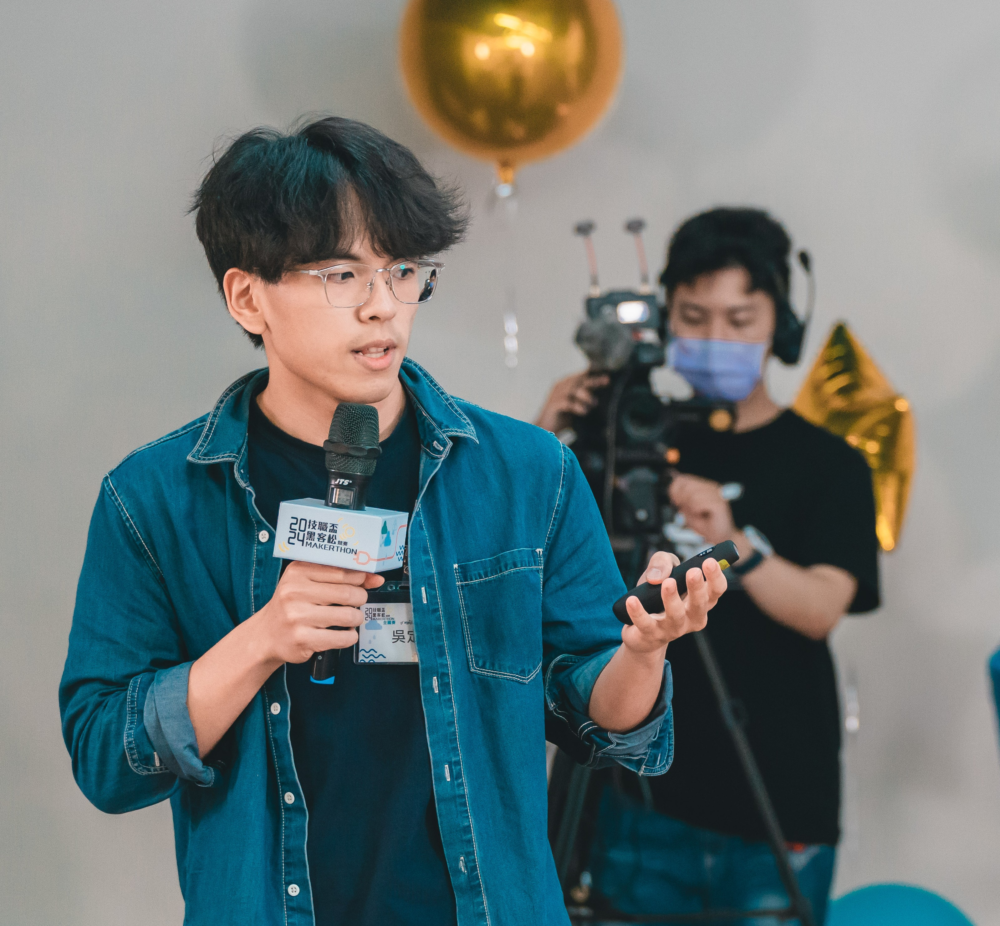

Double Major: Computer Science (CSIE) & Electrical Engineering (EE) | Minor: Biomedical Engineering (BE)
雙主修：資訊工程 (CSIE) & 電機工程 (EE)｜輔系：醫學工程 (BE)
National Taiwan University of Science and Technology (NTUST)
國立臺灣科技大學 (NTUST)
I am a student at National Taiwan University of Science and Technology (NTUST), double majoring in Computer Science (CSIE) and Electrical Engineering (EE), with a minor in Biomedical Engineering (BE). My recent work spans server system performance optimization and research in AI/ML (NLP, generative models).
目前就讀於國立臺灣科技大學 (NTUST)，雙主修資訊工程 (CSIE) 與電機工程 (EE)，輔系醫學工程 (BE)。近期經驗包含伺服器系統效能優化，以及 AI/ML（NLP、生成式模型）相關研究。